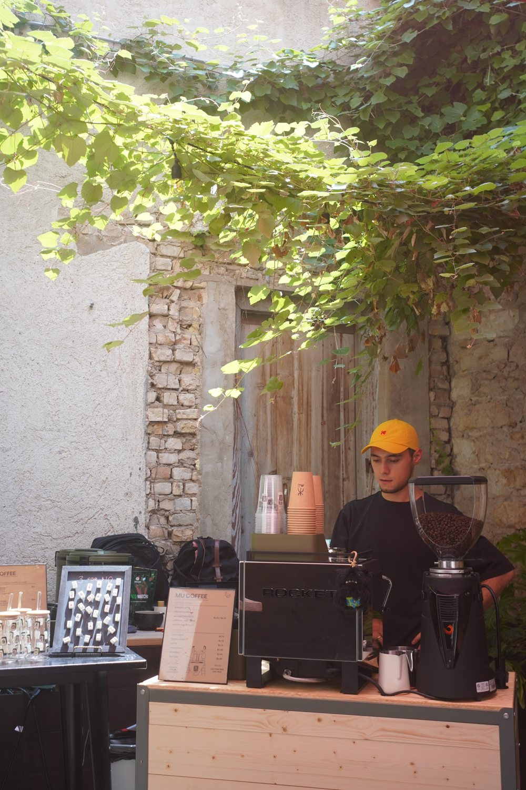

About me
I'm from Caracas. The rest takes longer.
Coffee, training, travel, and the things I make when nobody has asked me to.
Venezuela
Where it starts.
In 2009 I played left wing for Baruta FC in Caracas. That is the one piece of Venezuela that has made it onto this page so far, and it is not the interesting part.
This section is yours. Tell me what you want here — Caracas, family, why coffee, the parts you actually want a stranger to know — and I'll draft it. I've left it blank rather than guess.
Coffee
I sell small moments of enjoyment.

Genny and I started Mù Coffee in 2025. We import green coffee from China, which almost nobody does, and I turn some of it into cappuccinos. We're looking for a permanent home in Austin.
What I actually like about it is that a drink is a small good thing that happens to someone, right in front of you, and then it's over and you make another one. It has to be good every single time. You dial it in, you taste it, you do it again tomorrow.
Training
Twelve minutes a mile, down to nine.
I was diagnosed with long COVID in 2021. For a good year or two I couldn't eat solid food — the GI damage was the worst of it. I'm better now, though it still flares. Running started as a way to prove to myself that I could still choose to do a hard thing on purpose.
So now I do several. I've been running the Austin Half Marathon and the Downhill to Downtown Half since 2023, and when I miss one I find another — the Madeira half stood in for a Downhill to Downtown. I started around twelve minutes a mile and I'm down to about nine. I haven't cracked a sub‑two‑hour half yet.
My cousin got me into CrossFit and I can't seem to stop. I train most days. And I've played soccer my whole life — still out with friends whenever there's a game, and in 2009 I played left wing for Baruta FC in Caracas.
Travel
More than is strictly reasonable.
Genny and I have been together since 2 March 2018 and we have spent an unreasonable share of it in airports. Silas comes too. None of us find this remarkable.
When everything shut down in 2020 we got in the car instead. [the road trip — where you went, how long, the bit you still bring up]
And once we bought a ticket that just kept going east. [the round‑the‑world trip — the route, and what it cost you in sleep]
Two blanks above. Send me the trips and I'll write them properly.
Making things
Mostly for no reason.
Series A
A roguelike LitRPG about raising a round. It lives on the reading list, next to the books that caused it.
3D printing
Woodworking
A terminal
Built in Svelte and Rust. I still use it on my desktop. Everywhere else it's a plain terminal and nano.
3D printing and woodworking have no copy yet — a line each when you get to it.